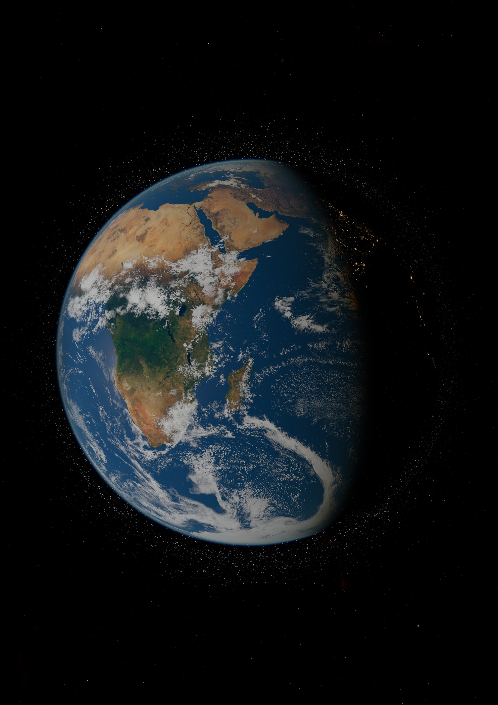

The whole universe, to scale, explorable.
Take the controls and fly from the space station to the oldest light in the universe, in one continuous move.
Every planet, moon, satellite, star and galaxy on the way is placed from real measurements: NASA, JPL, ESA Gaia and Planck, CelesTrak, DESI and many more.
Distances are true. Planets are drawn larger than life until you fly close, and the app says so on screen. Every image on this poster is a real-time render from Cosmos.